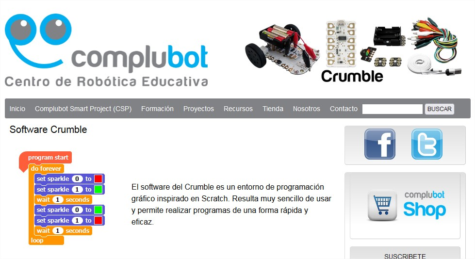
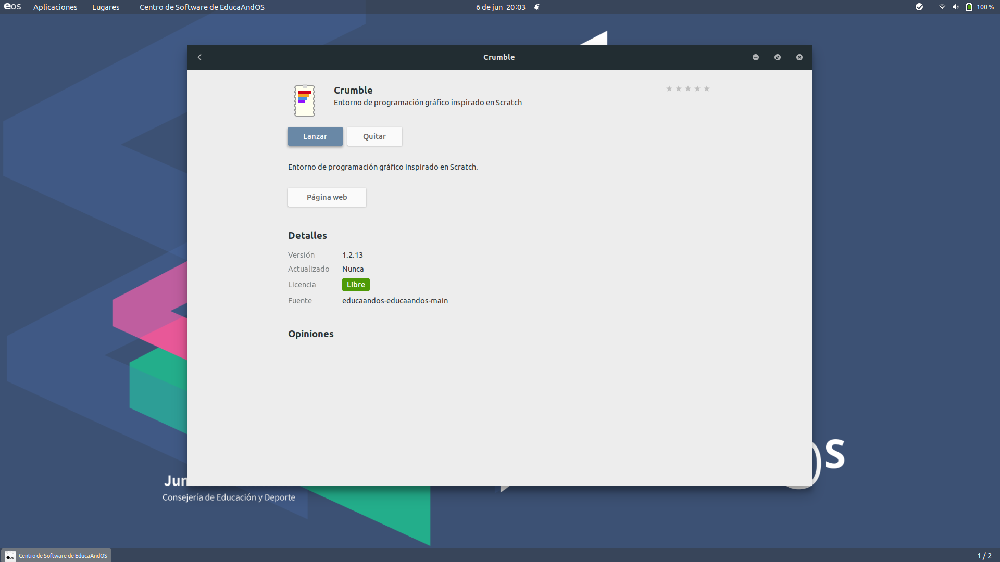

Instalación de Crumble
Para descargar el software que nos permite programar el robot Miibot, así como la placa Crumble, se puede descargar en la siguiente dirección o url: https://complubot.com/proyectos/swr/crumble/software-crumble/

en la que encontramos los distintos sistemas operativos para los que está disponible este software:
En el Sistema Operativo EducAndOs se puede descargar desde el repositorio. Los pasos a seguir son los siguientes:
1.- Pulsar en Aplicaciones:
2.- Se nos despliega un menú y elegimos:
3.- Y se nos abre el repositorio de software, eligiendo Herramientas de Desarrollo:
4.- Mostrándonos todos los programas de dicha categoría que se pueden instalar.
5.- Buscamos Crumble y pulsamos sobre dicho software:
6.- Pulsamos "Instalar" y se descargar la aplicación e instala en el sistema operativo:
7.- Por último, pulsamos sobre "Lanzar", para que se ejecute la aplicación:

8.- Y, se nos abrirá la aplicación:
9.- Pantalla principal de Crumble: